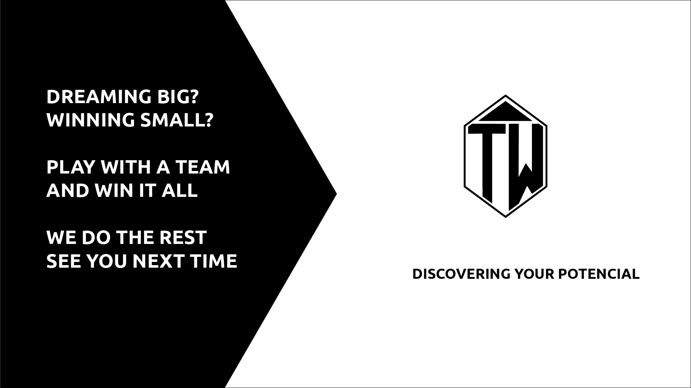
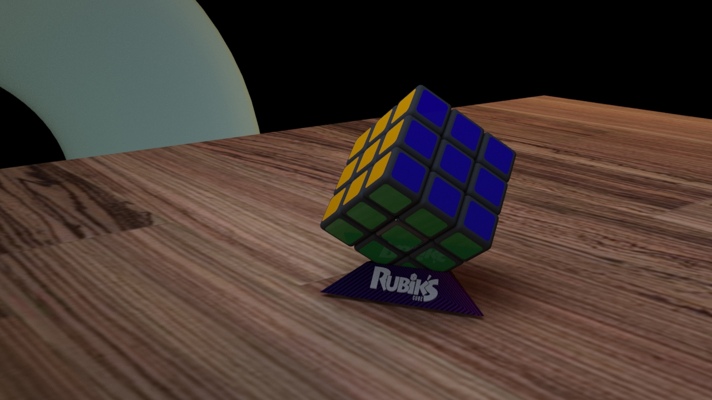

Sobre Mim
Chamo-me David Lopes, sou estudante de Engenharia de Multimédia no ISTEC, com forte interesse em Front-End Development, UI Design e Web Design.
Procuro crescer profissionalmente em projetos criativos e tecnológicos que combinem design, funcionalidade e experiência do utilizador.
Skills: Adobe Creative Cloud, Web Design, UI/UX
Os meus projetos


Contactos
Email: davidjplopes@gmail.com
LinkedIn: link do meu perfil